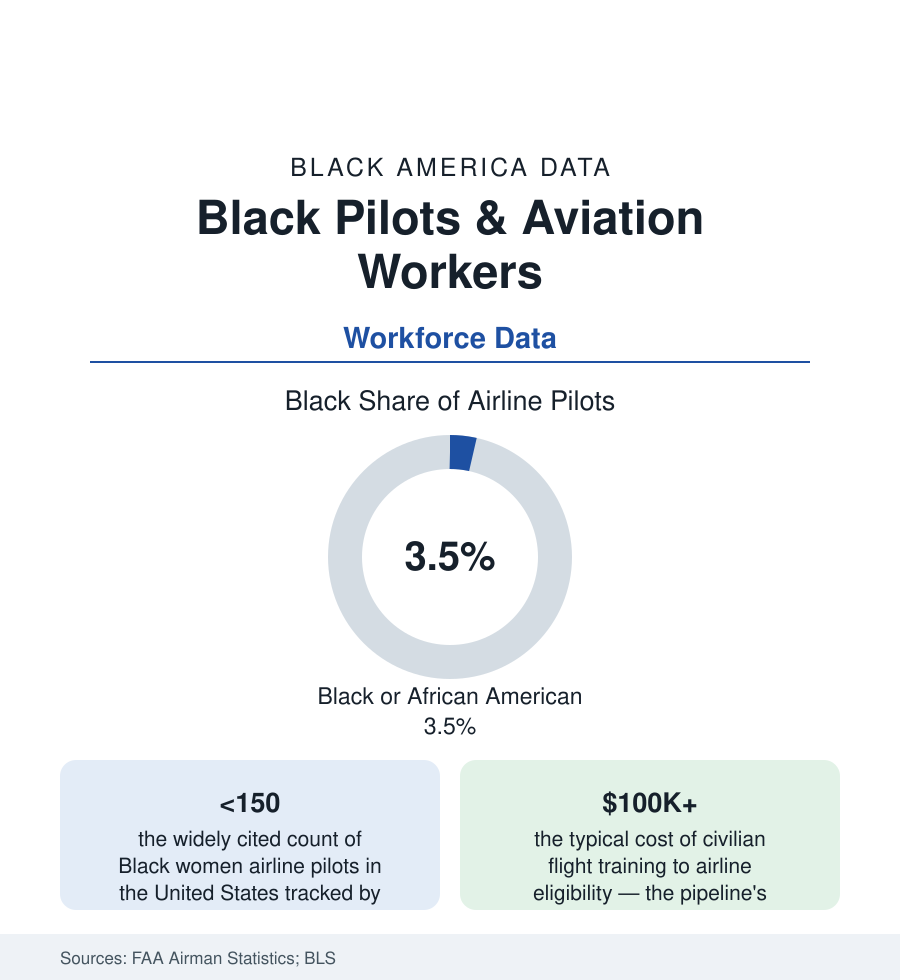

Black Employment
Black Pilots and Aviation Workers: The Smallest Cockpit in the Workforce Data
Fewer than 4% of America's airline pilots are Black, and Black women pilots number in the low hundreds. The FAA and workforce data behind aviation's steepest pipeline.

Of every occupation in this section, aviation holds the steepest gradient: fewer than four percent of America's airline pilots are Black in the federal workforce counts, and Black women pilots — counted by their own professional organization in the low hundreds nationwide — form the single smallest demographic cell in the skilled-workforce data this atlas tracks. The paradox is the altitude of the history behind the numbers: the Tuskegee Airmen are among the most honored units in American military memory, Bessie Coleman had to cross an ocean in 1921 to find a flight school that would teach a Black woman, and a century later the cockpit remains the profession the pipeline reaches last. This article reads the aviation workforce file.
The Workforce Beyond the Cockpit
The BLS and FAA data draw the industry in layers: the flight deck (pilots and flight engineers — Black share in the three-to-four percent range in the recent counts); the cabin (flight attendants, whose Black representation runs several times the cockpit's — the cabin crew labor history, from the first Black flight attendants' 1950s breakthrough cases, its own chapter); the ground professions (aircraft mechanics and avionics technicians, Black shares in the high single digits in the occupational data, fed by the A&P license pipeline through technical colleges and the military); air traffic control (a federal workforce with its own academy pipeline and a Black share the FAA's workforce plans track in the low teens); and the airport and airline corporate tiers (management shares thinning in the pattern of every industry in the earnings file). The military remains the industry's great alternative gate — the services train pilots at public expense, and Black officers' access to flight slots is the access story of the veterans file — but the post-Vietnam drawdowns shrank that gate as the airlines' hiring booms moved the center of pilot production to the civilian schools and the university aviation programs.
The Toll Gate: Training Economics
The civilian pipeline's price is its filter, and the file is blunt: the flight hours (1,500 for the airline transport certificate under the current rules), the instructor years flown at low wages to build them, the type ratings and checkrides — a total commonly above $100,000 before an airline paycheck, financed against a teenager's credit on the strength of a family's balance sheet. The wealth data of the census section do the arithmetic's racial side without further commentary: a toll of that size, at that age, with that financing, gates by inherited resources first and aptitude second. The industry's responses are the current era's file: the airlines' cadet and flow-through academies (several majors now run sponsored pathways that trade a service commitment for financed training — the military's model in corporate form), the university partnerships (the HBCU aviation programs — Delaware State's flight program, among the nation's largest producers of Black pilots, and Elizabeth City State's aviation science program — anchoring the collegiate tier), and the scholarship and mentorship infrastructure of the Organization of Black Aerospace Professionals (founded 1976) and Sisters of the Skies, whose counts of the Black-women-pilot population this article cites.
The Lineage the Data Carry
The profession's Black history is unusually well archived for so small a population: Coleman and the barnstorming generation; the Tuskegee program's thousand pilots and its ground crews (the 1941-46 training data, the Freeman Field stand of the officer corps' own integration fight); the postwar exclusion from airline hiring that lasted until the 1960s (the first Black pilots at the major carriers arriving in that decade, their hiring files documented); the astronaut corps as the lineage's public face — Guion Bluford's 1983 flight onward, the Black astronaut count in the space file standing at a small company of names every schoolchild in the aerospace camps learns. The memorial infrastructure (the Tuskegee historic site, the OBAP and Tuskegee Airmen Inc. chapters, the youth flight academies) functions as the pipeline's recruiting arm — heritage converted, deliberately, into accessions.
Reading the Aviation Data
The cockpit's numbers are the workforce file's limiting case: what representation looks like when the gate is priced at six figures and the lineage, however storied, must be re-climbed one financed student at a time. The academies and cadet programs now bending the cost curve will show in the FAA's certificate data within the decade. Until then the count stands: the smallest cell in the skilled workforce, watched by an entire community that has been flying — against the toll gate — for a hundred years.
More in Black Employment
The Black Unemployment Rate: The Two-to-One Pattern
Black unemployment runs at roughly twice the White rate — 5.5 percent against 3.3 percent in annual averages — a ratio stable across five decades of federal data. How it is measured and why it persists.
Black Median Weekly Earnings: The 80-Cent Ratio
Black full-time workers earn a median of about $900 a week — roughly 80 cents for every dollar White workers earn. The BLS earnings data by group, gender, and occupation.
Black Labor Force Participation: Working at National Rates
Black labor force participation runs at roughly the national rate — and Black women participate at higher rates than White women. The BLS participation data.
Source: Federal Aviation Administration airman statistics; U.S. Bureau of Labor Statistics; Organization of Black Aerospace Professionals; Sisters of the Skies; airline diversity reports.